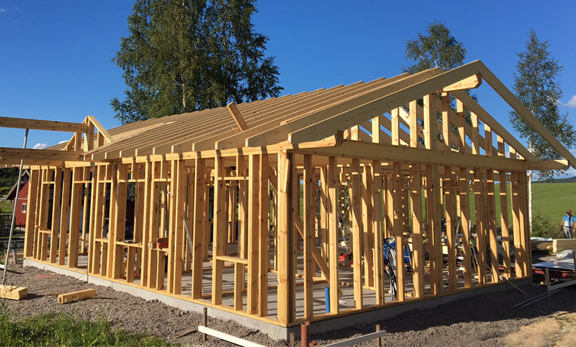

Företaget Tatra-House Bis specialiserar sig främst inom tillverkning av prefabricerade logghus med extra isolering. Vår stora erfarenhet av trähusbygge tillät oss att tillämpa tekniska lösningar som tar hänsyn till hur specifikt trä kan vara. Tack vare användningen av material av högsta kvaliteten, noggranna bearbetningen, moderna tekniken och breda kunskapen inom träkonstruktionen kan vi erbjuda ekologiska, hälsosamma hus med hög kvalité som är hållbara och energieffektiva.
Produktion
Byggtekniken hos Tatra-House Bis är beroende av prefabricerade logghus element som sätts ihop korsande på varandra. Trä som används för produktion av väggar är alltid noggrant segregerat, torkat i kammare samt hyvlat från varje sida för att säkerhetsställa högsta kvalitén. Väggarna kan också tillverkas av limträ som ökar träets hållfasthet och sänker risken för deformation.

Byggprocess
Våra hus sammansätts av två lag av våra kvalificerade och erfarna snickare. Tack vare användning av prefabricerade element kan monteringen av våra trähus jämföras med ihop sättningen av legobitar. Alla element är noggrant bearbetade och passar perfekt med varandra. Väggar, taket och takstolarna kan tillverkas inom 4–5 dagar, medan den totala sammansättning processen beror på husets storlek.
Isolering och installationer
Mellan ytterväggen och insidan av huset placeras lager av isolering. Trähus är isolerade med mineralull som tillåter uppnå bra värmegenomgångskoefficienter, även i smala väggar. VVS och elinstallationer leds inuti väggarna, tack vare detta är dessa inte synliga när huset är klart. Dessa arbeten utförs parallellt med husets sammansättning. Efter att VVS-, elinstallationer och isoleringen är på plats kläs väggen med trä- eller gipsskivor enligt kundens önskning.
Takstolar
Takstolar som används i våra hus är av högsta prefabricerade kvalitet. Därför väljs dem oftast att visas inifrån huset. Som allt annat projekteras takstolarna i ett datorprogram som tillåter våra erfarna arkitekter välja de bästa konstruktionslösningarna som ger förbättrad hållbarhet och stabilitet, eftersom särskild vikt läggs på termisk samt akustisk isolering. Taket är konstruerat och tillverkat på sånt sätt att kunden kan använda exakt det materialet de vill som taktäckning.

Skelett trähus
Vårt företag erbjuder även möjligheten till att tillverka hus som trä skeletthus. Vi bygger timmerramhus med klädsel på båda sidor. Var och en av våra logghus som presenteras hos oss kan utföras i skelett trähus teknik.
